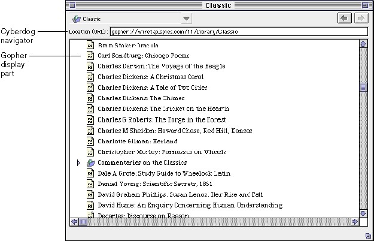
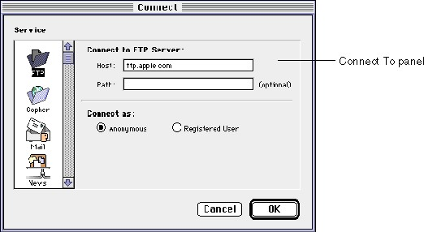
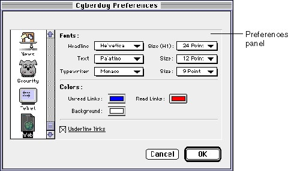

Legacy Document
Important: The information in this document is obsolete and should not be used for new development.
Important: The information in this document is obsolete and should not be used for new development.


Key Classes
The Cyberdog class library is built around a few key classes that you, as a developer, work with to create Cyberdog display parts and services. Each class defines the public interface for an area of responsibility within Cyberdog. There are five key Cyberdog classes.
The Cyberdog class library includes a number of other classes you can use to implement Cyberdog features. The entire Cyberdog class library is outlined in "Cyberdog Class Library" (page 53).
- A Cyberdog item is a reference to data stored at a remote location, such as on a local network or on the Internet.
- A Cyberdog display part displays the data referenced by a Cyberdog item.
- A Cyberdog stream downloads the data referenced by a Cyberdog item. A Cyberdog display part can use a Cyberdog stream to download data referenced by a Cyberdog item.
- A Cyberdog service implements network access for a particular network protocol.
- A Cyberdog session is a single, global object that represents a user's access to Cyberdog. The Cyberdog session keeps track of the supported Cyberdog services.
Cyberdog Items
A Cyberdog item stores the location of some data. The Cyberdog item does not store the data itself; instead, the item stores enough information about the location and protocol of the data to access the data on demand.There is a different kind of Cyberdog item for each protocol that Cyberdog supports. There are web items, FTP items, Gopher items, Telnet items, and so on. Each kind of Cyberdog item understands how to address information for that protocol. Cyberdog items are not distinguished by the type or format of the data to which they refer. Cyberdog FTP items, for example, are used to address any data located on an FTP server, regardless of whether the data is an FTP directory, an image, audio, or text.
In addition to its address information, a Cyberdog item has an associated icon and a default display name. The user can select a Cyberdog item and choose the Get Info command from the Edit menu to display an Item Info window for the Cyberdog item. For most Cyberdog items, the Item Info window displays the Cyberdog item's icon, display name, and URL.
A Cyberdog item defines its opening behavior. What happens when a user opens a Cyberdog item depends on the implementation of the Cyberdog item. When a Cyberdog item is opened, it is responsible for determining the kind of data it references and creating a display part appropriate for displaying the data. If a Cyberdog item references a downloadable file, the Cyberdog item is responsible for producing a Cyberdog stream that can be used to download the data.
A Cyberdog item is persistent; it has a kind and can be stored in a storage unit. By convention, when a Cyberdog item is stored in a storage unit, it is written in a minimum of two formats in decreasing order of fidelity: the Cyberdog item kind (
kCyberItemKind) and the URL text.The user can drag a Cyberdog item to the Finder. When the user drags a Cyberdog item icon to the Finder, Cyberdog downloads the content that the item references and saves it as an OpenDoc document. In the Finder, the file is represented by a part icon, as shown in Figure 1-5. When the user drags a Cyberdog item to the Finder using Option-drag, Cyberdog saves the Cyberdog item as a reference to content stored on a network. In the Finder, the file is represented by a reference icon.
Figure 1-5 Cyberdog item icons in the Finder
Cyberdog Display Parts
A Cyberdog display part is an OpenDoc part that has been enhanced to display the content referenced by a Cyberdog item. In particular, a Cyberdog display part knows how to use a Cyberdog stream to download data referenced by a Cyberdog item. Like any OpenDoc part, a Cyberdog display part can be embedded in an OpenDoc document.Cyberdog display parts are distinguished by the type of data that they display. For example, a Cyberdog JPEG part can display JPEG data, whether the source of the JPEG data is a Gopher server or an HTTP server.
Like any OpenDoc part, each Cyberdog display part has associated part kinds that describe the types of data it can display. When a Cyberdog item needs to create a part to display the content it references, OpenDoc uses the kind of the data to determine which part editor is appropriate. Cyberdog uses MIME media types to create corresponding OpenDoc kind strings.
As an OpenDoc part, a Cyberdog display part can add menu items of its own to the menu bar and modify the standard OpenDoc menus. In particular, a Cyberdog display part may replace the standard Document menu with a Document menu customized for parts whose data is not stored on disk. Cyberdog services can also add menus to the menu bar. A Cyberdog display part can choose to display Cyberdog service-related menus as well as its own menus. For example, when the Cyberdog FTP display part is active, the FTP service adds an FTP menu to the menu bar.
The simplest Cyberdog display parts display content that does not contain links to other content (a JPEG display part, for example). Figure 1-6 shows the Cyberdog text display part displayed in its own window.
Figure 1-6 A Cyberdog text part
Some Cyberdog display parts, such as FTP, Gopher, and HTML display parts, display content that includes links to other content, as shown in Figure 1-7. By convention, such display parts display themselves embedded in a navigator. A navigator is an OpenDoc part that can embed Cyberdog display parts. It provides a user interface that allows the user to navigate easily from network location to location without opening many windows.
If a display part displays content that includes links to other data, the display part must parse its content to find references to other content. For each reference, the display part creates a corresponding Cyberdog item and holds it in its content model. When the user clicks on a link, the display part opens the corresponding Cyberdog item.
Figure 1-7 A Cyberdog Gopher part

Cyberdog Streams
A Cyberdog stream is an object used to retrieve data at a location described by a Cyberdog item. A Cyberdog stream downloads data for a given protocol. For any type of Cyberdog item that refers to data stored on a file server, there is usually a corresponding stream that is used to download data for the given protocol.To download data, the stream object must fulfill three conditions:
A stream object's ability to provide data as a uniform, clean byte stream accounts, in part, for Cyberdog's flexibility. A Cyberdog display part can dynamically access data from a Gopher server, a web server, or a local file. The display part requests a stream from a Cyberdog item, initiates the download, and retrieves data from the stream as it becomes available. The item/stream pair insulates the display part from details of where the data came from or how it was downloaded.
- Get enough addressing information from its creating Cyberdog item to locate the network resource desired,
- Negotiate with the server to retrieve the data, and
- Clean up the downloaded data by removing extraneous information such as headers, pad bytes, and so on. For example, Cyberdog stream implementations should delete the line-feed from carriage-return/line-feed pairs in text data.
Cyberdog includes stream objects for downloading data for common protocols such as HTTP, FTP, Gopher, and so on. A Cyberdog item and Cyberdog stream for a particular protocol are associated with a corresponding Cyberdog service object.
When a display part is ready to download the content referenced by a Cyberdog item, the display part requests a Cyberdog stream from the item. The item creates a stream that the display part can use to download the data. When the data is downloaded, the Cyberdog display part deletes the stream. Unlike Cyberdog items, Cyberdog streams are transitory. A Cyberdog stream is used to download data from a location one time; the stream is never reused, even to download data referred to by the same Cyberdog item a second time. If a stream object encounters an error, it is permanently broken.
Downloading Data
The Cyberdog stream interface is structured so that the stream can read data efficiently in its own thread. When a display part requests a Cyberdog stream to initiate a download, the stream is free to begin the download. The display part polls the stream periodically to check on the status of the download operation. The Cyberdog stream provides an interface that the display part can use to monitor the progress and the status of the download operation, and determine when data is available for display.A Cyberdog stream has memory buffers that it uses to hold data as it is downloaded. When the stream has data available, the display part can retrieve a buffer of data from the stream. When the display part is done reading a buffer, it can release it back to the stream. This scheme minimizes the repeated copying of data during the downloading process and allows the stream to proceed with the downloading instead of waiting for the display part to retrieve data from it.
When the stream detects that the downloading operation is complete, it closes the connection on its own.
Using a separate stream object to download data provides flexibility; however, in some cases, that flexibility is not always necessary. For example, the Telnet display part does not use a separate stream object to get its data because the Telnet display part always gets its data from a Telnet server that uses the Telnet protocol. The Telnet display part is specialized to download data using the Telnet protocol itself rather than relying on a separate Telnet stream.
When opened, the Telnet display part asks its creating Cyberdog item for the URL to be downloaded and proceeds with the Telnet download operation itself. Contrast this situation with a JPEG display part that might get its data from any number of sources. As a practical matter, almost all the services supported by Cyberdog are implemented with corresponding Cyberdog streams.
Cyberdog Services
A Cyberdog service provides Internet access using a particular network protocol. A Cyberdog service acts as the coordinating object for the set of objects that collectively implement a protocol. This set of objects may include:
In addition, a service may add its own service-specific menus to the menu bar.
- the Cyberdog item that references data accessed using the protocol
- the Cyberdog stream that downloads data using the protocol
- a service-specific panel to be embedded in the Connect To dialog box
- a service-specific panel to be embedded in the Preferences dialog box
You can use any of the fully implemented services that come with Cyberdog or you can extend Cyberdog to support new network services. When Cyberdog is initialized, it creates a Cyberdog service object for each supported service. Cyberdog selects the appropriate service object as needed to access network data.
If you are developing a Cyberdog display part, you should not need to access Cyberdog service objects directly. In most cases, other objects in Cyberdog mediate between Cyberdog display parts and service objects. Cyberdog service objects are mainly of interest to developers who want to implement their own services.
Cyberdog Menu
When a user uses Cyberdog, three menus are always available: the Document menu, the Edit menu, and the Cyberdog menu. Most menu items in the Document and Edit menus provide standard OpenDoc functionality. Cyberdog display parts should always add the Document and Edit menus. Cyberdog display parts that are not embedded in an OpenDoc document should replace the standard Document menu with a custom Document menu for parts whose data is not stored on disk.The Cyberdog menu contains items that provide access to Cyberdog supporting parts such as the Connect To dialog box, the log, the notebook, and so on. These supporting parts may add their own menus to the menu bar. For example, when a navigator is activated, it adds a Navigate menu to the menu bar. Following OpenDoc conventions, these part-specific menus appear and disappear from the menu bar as their parts are activated and deactivated. In addition, each Cyberdog service can add its own service-specific menus to the menu bar.
A Cyberdog display part can choose to include the Cyberdog menu and service-specific menus in its menu bar. To do so, the display part creates a Cyberdog service menu object, which represents the Cyberdog menu and all of the menus added to the menu bar by all Cyberdog services.
Connect To Dialog Box
The Cyberdog Connect To dialog box allows the user to specify the information needed to connect to a remote location. The Connect To dialog box displays a selectable list of services, as shown in Figure 1-8. When the user selects a service, the service's Connect To panel is displayed; the user enters the connection information.The format for specifying connection information varies from service to service. For example, the Connect To panel for a Gopher service might allow the user to specify a host name, whereas a Connect To panel for a Telnet service might allow the user to specify a terminal type. In addition to the service-specific Connect To panels, Cyberdog provides a general-purpose Connect To panel that allows the user to specify a URL.
Figure 1-8 The Connect To dialog box

If you add a new service to Cyberdog, you may need to create a Connect To panel, a part that is embedded in the Connect To dialog box. Your custom panel should contain user interface elements that allow the user to specify connection information for the new service.
Preferences Dialog Box
The Cyberdog Preferences dialog box allows the user to specify usage preferences for a particular service. The Preferences dialog box displays a selectable list of services, as shown in Figure 1-9. When the user selects a service, the service's Preferences panel is displayed; the user enters preferences specific to that service.The preferences that the user can specify vary from service to service. For example, the Preferences panel for an FTP service might allow the user to specify whether UNIX hidden files should be shown, whereas the Preferences panel for a World Wide Web service might allow the user to specify the colors used to display links.
Cyberdog stores preferences using Internet Config, software that many Internet access programs use to store and recall user preferences. For more information on Internet Config, see the Internet Config documentation located at the FTP site
ftp://redback.cs.uwa.edu.au//Others/PeterLewis/InternetConfig1.2.sitor search on the Internet for "Internet Config".Figure 1-9 The Preferences dialog box

If you add a new service to Cyberdog, you may need to create a Preferences panel, a part that is embedded in the Preferences dialog box. Your custom panel should contain user interface elements that allow the user to specify preferences for the new service.
Cyberdog Session
The Cyberdog session is a global object that represents a single user's access to Cyberdog. A single Cyberdog session object exists in each process in which Cyberdog is running. The Cyberdog session keeps track of
The Cyberdog session represents the user's opening of and access to a single, nonpersistent Cyberdog session document. The Cyberdog session document is an OpenDoc document whose root part never displays itself.
- services that are available to the session
- notebook
- log
- Connect To dialog box
- Preferences dialog box
- Cyberdog session document
Figure 1-10 shows the various documents that share a Cyberdog process and the storage relationships among them. The Cyberdog Starting Point, notebook, log, and session document are all separate OpenDoc documents. The session document contains all navigators and display parts that Cyberdog opens to display network content. The Cyberdog session document does not contain Cyberdog display parts that are embedded in other OpenDoc documents.
Figure 1-10 Storage relationships in a Cyberdog process
The Cyberdog session also provides access to a number of global Cyberdog utilities.